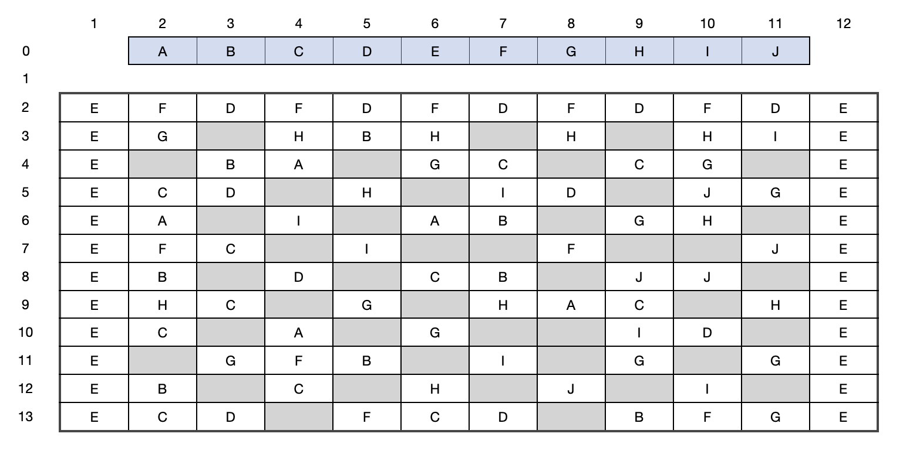

Optimising the Placement of Components on a Printed Circuit Board to Maximise Throughput
Problem Brief
Philips Electronics produces printed circuit boards (PCBs) for use in consumer elec- tronics (audio and video equipment, personal computers) and in professional industries (telecommunication systems, aircraft navigation, medical equipment). Special machines are used to mount components onto the boards. The problem to be considered is one of production preparation: for each type of PCB, it is necessary to specify the way in which the components should be mounted. This case study is based on work carried out for one of the major product divisions of Philips. Although some simplifications have been made to the original problem, this does not affect the main characteristics of the decisions that have to be taken.
It is required to maximize the throughput of the assembly line, which is determined by the machine with the heaviest workload. The workload of a machine is proportional to the total distance travelled by the robot arm. To maximize the throughput, minimise the distance travelled by the machine arms.
Soltuion Report
This project was a group project, there were 4 of us who worked on this problem. My primary responsibility was to glue together all the subproblems and write the report. It was all coded using Python and the main techniques used were clustering algorithm, greedy heurisitcs and neighbourhood search
1. Introduction
Philips Electronics wants to maximise the throughput of printed circuit boards (PCBs) on their assembly lines. PCBs are used in consumer electronics such as computers and in professional industries like aircraft navigation. To manufacture the circuit boards there are several elements:
- Arm - each machine has a single arm
- Head - on each arm there are 3 heads that equipment can be attached to
- Equipment - there are 9 types of equipment labelled E1- E9 (3 for each machine) that can pick up a subset of components and place them on the PCBs. Once the equipment is attached to the machine it becomes an extension of the head.
- Feeders - the holding place for components on the side of the conveyer belt
- Components - the parts that make up the PCBs, there are 10 component types labelled A to J
Table 1. Subsets of Components each Piece of Equipment can pick up and place
| Piece of Equipment | Types of Components that can be mounted |
|---|---|
| E1 | C, F, G |
| E2 | C, F, G |
| E3 | B, G, H |
| E4 | C, H |
| E5 | E, I |
| E6 | A, E |
| E7 | E, J |
| E8 | B, C, I |
| E9 | D |
Each PCBs comprises of 5 to 24 components of each type, for a total of 102 components on the board (Figure 1). To assemble the circuit boards three machines are used to mount the components that are kept in feeders along one side of the conveyer. Each head can pick up only one component at a time, limited to component types that can be mounted by the specified equipment. The arm must pick up components according to the order of the head; therefore, it cannot pick up a component with head 1 after picking up a component with head 2. Once the arm has begun to place down components, it must continue placing all components currently on the arm before it picks up any new components. Once the circuit board is on the assembly line, beginning at machine 1, each machine's arm does the following:
- 1 to 3 components are picked up from the feeder
- The components picked up in step 1 are placed on the board in the same order they were picked up in
- Steps 1 and 2 are repeated until all components allocated to machine 1 have been placed
- The printed circuit board moves onto machine 2, where steps 1 to 3 are repeated
- The printed circuit board moves onto machine 3, where steps 1 to 3 are repeated
N.B. PCB cannot move from one machine to the next if the sequential machine is occupied
Figure 1: Diagram of PCB, feeders are blue, components white, and empty cells grey. The outer axis labels identify the position of each component. Example: the first G component in the second column has the position (2, 3).
Maximising throughput can be quantified by calculating the distance travelled by the machine with the heaviest workload (most distance travelled). The objective function, distance travelled is calculated using dit.
d = distance travelled by arm
i = machine 1, 2, or 3
j = components to be placed and their feeders
t= trial number
N = number of components allocated to machine
x = position on x axis
y = position on y axis
\(d_{it} = \sum^N_{j=2} \sqrt ((x_{jit} - x_{(j-1)it})^2\) \(+ (y_{jit} - y_{(j-1)it})^2\)(1)
qt = max{di} for each trial
heaviest workload with the shortest time = min {qt}
After the first PCB is completed at each machine, the second PCB and those thereafter begin at the last position of the arm from the board before it. To approach finding maximum throughput the problem was segmented into three:
- Subproblem 1: Allocate equipment to the heads of each machine
- Subproblem 2: Identify which components each machine should place on the board
- Subproblem 3: Optimise order components are placed on the circuit board
2. Estimating a Minimum Distance
On average, each machine can place 34 components. To set expectations of possible outcomes, a rough minimum distance is estimated by calculating distance for the machine mounting component D. There are 11 D components which can only be distributed by E9 (i.e. only one machine can pick and place component D). Thus, at an absolute minimum there are 11 rounds of pick and place on this machine, with these actions performed on 3 components each round.
The estimation begins by placing D alone, the distance the arm must travel between feeder and positions on the circuit board is 150 units. Then, it is assumed that the arm will only need to travel 1 additional unit every time it completes a pick or place action for the 2 other components in the round. For a total additional distance of 4. The estimated minimum distance increases to 194. However, it is unlikely that this distance is achievable.
3. The First Attempt: A Hand-worked Solution
To have a better understanding of potential outcomes a logical solution was found. The first step towards this is counting the number of components for each component type (refer to Table A1), and which equipment types could pick and place each. The ratio of components to head for each component is calculated (eg. 8 B components, 2 B heads, therefore 4 components/head), and is summed for each equipment to understand the 'average work' to be completed (eg. E3 can place components B,G,H, so its average work is 4+3.67+5= 12.67). Using excel solver, equipment is allocated to machines 1, 2, and 3 by minimising average work.
Mounting the board with components begins at Machine 1 by picking up 3 components. The pick-and-place order was done by hand; using the distance (eg. Feeder A to Component A in position (4,4), the distance between the 2 is\( \sqrt((4-2)^2+(4-0)^2) = \sqrt(20))\) between a component's feeder position and the position on the board as a guide.
Table 2: Outcomes from the hand-worked solution.
| Allocated Equipment | Distance- Trial 1 | Distance- Trial 2 |
|---|---|---|
| Machine 1: E1, E2, E9 | 249.96692 | 274.8650357 |
| Machine 2: E3, E8, E5 | 335.3204929 | 328.7241656 |
| Machine 3: E6, E7, E4 | 351.476177 | 328.3364888 |
The heaviest workload of each trial is in red. Trial 2's distance of 328.7241 (to 4 d.p.) will be used as a comparison tool against future outcomes. The final solution is expected to be < 328.7241.
4. Methods Explored and/or Researched
4.1 Subproblem One: Allocating Equipment
Each type of equipment can mount different combinations of components, and each machine can attach an ordered combination of 3 equipment types. Combinations of components can be thought of as clusters. Research on clustering algorithms explained that there are 5 types: K-Mean Clustering, Agglomerative Hierarchical Clustering, Expectation-Maximization (EM) Clustering, Density-Based Spatial Clustering of Applications with Noise, and Mean-Shift Clustering [1]. K-Mean Clustering was identified as the best method, as it is capable of revealing underlying patters, and pinpointing a fixed number of 'k' clusters known as the k-mean [2]. Locating patterns within the components on the circuit board can help with optimising how they should be placed. Which also dictates which equipment should be on which machine.
4.2 Subproblem Two: Identifying Components
This phase begins with the outputs from the first subproblem- equipment added to each head. Because each equipment can only pick-and-place a subset of component types, each machine is also too now subjected to a subset of components. It is likely the subset exceeds the quantity of components to be allocated to an individual machine, so it is necessary to identify which components can be placed on the board by each machine. To do so, an algorithm written in AMPL minimises the sum of distances between feeders' and components' positions on the board. On each round of 'pick-up' the machine's arm picks up 3 components or the max number of components available for pick up.
Unfortunately, this approach was not very effective at reducing the distance for the machine with the heaviest workload (when compared to the hand worked solution), as it made it more imbalanced.
4.3 Subproblem Three: Minimising Distance
For each machine, subproblem 3 focuses on minimising the distance the arm travels to place each component on the circuit board, given that the components have already been assigned to each machine. Initially, the objective function was modelled as a non-linear binary problem with a three-dimensional set of binary variables- machineList[p,c,h]; where non-linearity only occurs in the objective function. Index 'p' refers to the position in the sequence of moves the arm will make, 'c' refers to the component to be placed, and 'h' refers to the head with which the component is picked up on. Thus if machineList[p,c,h]= 1, then on the pth position in the sequence on moves, the arm is placing component 'c' on the board with head h. The component variable dictates the number of rows in machineList, because the arm must both pick up and place each component. The first N indices of c refer to placing components and the second N indices refer to picking up from the feeder, i.e. machineList[p, c+N, h] = 1 would mean that on the pth position in the sequence, the arm is at the feeder for component c, picking up the component with head h. Therefore, there are 2N rows and sequences, where N is the number of components allocated to the machine.
Using a nonlinear binary optimisation method surfaced additional constraints. Though they were already assumed, they needed to be specified for this method.
- The arm must go to every component and corresponding feeder move exactly once
- The arm can only be in one location at a time
- The arm can only go to place the component if it has already picked up the component from the feeder
- The arm must place the component with the same head that picked it up
This model was tested with a toy example containing three components; the algorithm took <1 second to find an optimised outcome. The toy example was increased to 4 components, which took a minute to solve, and then tested again with 5 components which took under 5 minutes to solved. Knowing that a full set contains 30-40 components it was not scalable and discontinued. Nevertheless, it was still useful to helping solve the heuristic within the final solution where only one pick and place group was optimised at a time.
Constraints for Nonlinear Binary Optimisation Model
To enforce the arm is at a single location for p in 1 to 2n:
\(\sum^{2n}_{c=1} \sum^3_{h=1}\)machineList[p, c, h] = 1(2)
To enforce that each component is only placed once for c in 1 to 2n:
\(\sum^{2n}_{p=1} \sum^3_{h=1}\)machineList[p, c, h] = 1(3)
To enforce picking a component before placing it, for p in 1 to 2n and c in 1 to n:
\(\sum^p_{p'=1} \sum^3_{h=1}\)machineList[p', c, h] \(\leq \sum^p_{p'=1} \sum^3_{h=1}\)machineList[p', c+n, h](4)
To enforce a head picks up one component at a time, for p in 1 to 2n, h in 1 to 3:
\(\sum^p_{p'=1} \sum^{2n}_{c=n+1}\)machineList[p', c, h] \(- \sum^p_{p'=1} \sum^n_{c=1}\)machineList[p', c, h] \(\leq\) 1(5)
To constrain equipment to pick up assigned components (seen in Table 1), for c in 1 to 2n, h in 1 to 3:
\( \sum^{2n}_{p=1} \)machineList[p, c, h] \( \leq \sum^n_{k-1}\)componentTypes[c, k] x headComponents[h, k](6)
Here, componentTypes is a binary matrix, with all the components to be placed as rows and the different component types as columns, where a 1 indicates that for that component it is of that component type. headComponents is a matrix which says which components can be picked up by which heads.
To stop the (n-1)th move from being a picking move if the nth move is to pick up using head 1, for p in 2 to 2n:
1 - \( \sum^{2n}_{c=n+1} \) machineList[p, c, 1] \(\geq \sum^{2n}_{c=n+1} \sum^3_{h=1}\) machineList[p-1, c, h](7)
To stop the (n-1)th move from picking using head 3 if the nth move is to pick using head 2, for p in 2 to 2n:
1 - \( \sum^{2n}_{c=n+1} \) machineList[p, c, 2] \(\geq \sum^{2n}_{c=n+1} \sum^3_{h=1}\) machineList[p-1, c, 3](8)
5. Solution/Final Algorithm
5.1 Subproblem One: Allocating Equipment
During the research phase of this problem the consensus arrived at using the K-means clustering algorithm to allocate equipment to the heads of each machine. K-means clustering algorithm works by taking the following steps:
- Specify the number of k clusters
- Within each cluster the centroid is initialised by shuffling the dataset and then randomly selecting a data point
- The centroid is then found by iterating this selection process until there is no change in the last two selected centroids within each cluster
For our problem we set K = (the total number of components a head was able to place)/3. The cluster algorithm was run iteratively such that each head arrangement was used. A weighting formula was developed and used to calculate the best head placement.
Ci = number of components in cluster i, where i = 1, 2, 3, 4, 5, 6
Weight = 0.5C1 + 3C2 + 8C3 + 2C4 + C5 + 3C6 (9)
This formula gave a numerical value on the performance of each head iteration, the largest was chosen.
As this is a heuristic algorithm, the outcome of each trial is different. The algorithm was run multiple times until three distinct combinations (not permutations) were established.
Table 3: Equipment Placement to heads on each machine for 3 Trials
| Trial No. | Machine 1 | Machine 2 | Machine 3 |
|---|---|---|---|
| 1 | 3, 7, 9 | 4, 5, 8 | 1, 2, 6 |
| 2 | 1, 6, 8 | 4, 5, 7 | 2, 3, 9 |
| 3 | 1, 4, 5 | 6, 7, 8 | 2, 3, 9 |
5.2 Subproblem 2: Identifying Components
The imported parent data frame includes all data referring to components, their positions, the positions of their relative feeder, and which equipment can mount them to the board. The parent data frame was then used to create. Individual data frames for each equipment type, and each component type containing their coordinates on the circuit board were created for a total of 19 data frames. The two types of children data frames were then concatenated to establish the relationship between the equipment and which components they are capable of mounting (eg. E1 can operate on components C, F and G therefore the E1 data frame is a combination of C, F and G data frame).
Indexes were used to give unique identifiers to each component within the parent data frame; which are then used to find all unique combination of 3 components. To optimise the allocation of components to machines a three-part algorithm using these functions was made:
- Dist(a,b,c): a, b, and c are the components' index numbers within each combination, and the function measures the short distances (using eq (1)) connecting them
- Pickandplace(a): returns the feeder type for a component
- alloc(x,y,z,xx,yy,zz,xxx,yyy,zzz): identifies components to be placed by each machine by using a greedy heuristic. Machines from subproblem 1; x,y,z are those for machine 1, xx,yy,zz for machine 2, and xxx, yyy, zzz for machine 3.
These three functions can search through the different component combinations each machine can mount as specified by the allocated equipment. Because searching through all 3- component combinations was time consuming, a limit was placed on the number of iterations: i in range(0, min(search,length of equipment data frame) where search is an arbitrary number that defines the level of thoroughness of the search. Search= 33 is every combination possible, but values 6 to 10 were found to provide good enough outputs relative to computation time. Therefore, all combinations of components in the equipment data frame will be iterated over or up until the search limit is met.
For example, if equipment E1, E2, and E3 are on machine 1, the first part of this algorithm will select 'i' in range(0, min(search, length of E1 data frame)), j in range((0, min(search, length of E2 data frame)), and k in range(0, min(search, length of E3 data frame)). The iteration finds 3-component combinations and then uses dist(a, b,c) and pickandplace(a) to calculate the distance of the route for these 3 components.
The 3-component combination chosen is inputted into a table with their distance, and this process is for pre-set range of iterations permitted. The algorithm then selects the 3-component combination with the shortest distance and logs it as the first combination to be used; these components are then removed from every equipment database. This method is repeated for machine 2 and machine 3.
This process was continuously repeat, but soon after the 8th attempt the workload of machines became imbalanced and more inefficient. To improve the process a new function that calculates the total distance travelled by each machine's arm was introduced, so that when components were allocated to each machine it would use the solution from the machine with the currently shortest total distance. To ensure the additional equation performed accurately a new constraint explicitly stated the machine must have a head that can move the component to be considered for shortest distance.
Though it seems that always picking and placing 3 components at a time would be optimal, there are situations where 2 components or even 1 component moved at a time will improve results. When the algorithm arrives at this stage the machine with the shortest distance is selected and 2-componet combination distances are calculated and selected for the machine. This continues until there are also no more 2-component combinations available. The algorithm will then allocate individual components to machines till there is no components remaining.
This process minimises the distance of the machine with the heaviest workload by spreading the distance as equally as possible among all machines. The final selection order is exported into an excel file that can be inputted into the third subproblem.
5.3 Subproblem Three: Minimising Distance
The most scalable (and best resulting) approach is a neighbourhood search heuristic. A 'bad solution' initialises the method by picking up one component at a time and placing it. Each pickand- place action then forms a group, thus initially, all components are placed in separate groups. The algorithm has the option to then move to a neighbouring feasible route through selecting from a list of neighbouring solution moves, which are:
- Merge: choose two pick-and-place groups to combine into one group (up to a maximum of three in a group)
- Split: remove a component from a pick-and-place group
- Shuffle: insert a group between two other groups
- Transfer: remove a component from one group and place it in another
- Swap: select two components each from a different group and swap them
The moves are selected randomly, as are the individual groups and components that the move affects. For the merge, transfer and swap moves, once the components were grouped, the initial method described in 4.3 was used to optimise the path for that group. As there were only up to three components in a group, solutions were produced in approximately 0.15 seconds each. Once the move was completed, the objective function was evaluated, and if the distance was lower than for the previous route, then the new route was accepted. The algorithm would then attempt to make a move in the new neighbourhood. The algorithm was designed to terminate after a given number of failed consecutive attempts to move in a neighbourhood. The number used was usually in the range of 200-500.
Though components were allocated to machines in subproblem 2, the final distances of the three machines were found to be imbalanced. This meant that the machine with the heaviest workload was potentially doing much more than others. In an attempt to better balance the workloads of the three machines the following steps were taken:
- Randomly select a component on the machine with the longest distance that is capable of being placed by the machine with the shortest distance, and transfer it to that machine
- Recalculate the minimum distance of the machine with the heaviest workload and the one the component will be moved to by using the neighbourhood search algorithm
- If distance is reduced accept the new solution
- Steps 1-3 were repeated until the three machines all had similar distances
A major flaw of step (1) is that components to be transferred were not selected with any idea of the effectiveness of reducing the distance. A more thorough approach would consider the effect every possible component would have. However, the time required to calculate the distance was too high for this to be feasible.
6. Results
Improving the initial hand-worked solution (section 3.) using neighbourhood search easily reduced the heaviest workload to 325 even though the component to machine allocation was the same. After manually relocating some of the components the neighbourhood search algorithm was run again further reducing the heaviest workload to 310.
However further improvements on this distance were much harder to come by when manually allocating components. And, full automation of the problem produced answers that were frequently under 310, but very rarely ever achieved a distance below 300.
The most troublesome aspect of the problem was trying to balance the machines workloads. Balancing equations as well as manual approaches were used to correct the imbalance. During many attempts to correct this the heaviest workload was only reduced marginally but caused large increases for the other machine. In the end, the workload was well-balance with a final distance of 296.8, and the other machines moving a distance of 292.8 and 295.4.
Figure 2: Machine 1's arm travels 296.8024 units mounting components A, D, E, and I using E5, E6, E9 (colours represent the round of pick-and-place)
Figure 3: Machine 2's arm travels 292.8193 units mounting components B, C, E, F, G, I, J using E1, E7, E8 (colours represent the round of pick-and-place)
Figure 4: Machine 3's arm travels 295. 4195 units mounting components C, F, G, H using E2, E3, E4 (colours represent the round of pick-and-place)
Many of the pick-and-place actions tend to place components that are near to one another, like in Figure 3. pick-and-place rounds 2 and 4. However, another efficient way of placing components is by placing them while en route to further away components, as demonstrated by pick-andplace round 7 in Figure 3 which places two components directly on the shortest path to the distant component leading to no increase in distance. Conversely, there are also pick-and-place rounds which cause the arm to make large arcs, severely increasing the total distance (eg. Pickand- place rounds 5 and 12 in Figure 2, and round 12 in Figure 3). While it is unlikely that these routes are entirely avoidable, due to the tight constraints on which components can be placed by equipment, it is possible smaller routes could be formed if components were swapped over on machines. Overall, there were a limited number of pick-and-place rounds with long distance in comparison to the number of very efficient routes indicating that the final routes are reasonably efficient.
7. Suggestions for Algorithm Improvement
- The order of equipment on machine heads matter. Using k-mean clustering the solution found was a combination and not a permutation. Elementary research suggested that competition between each of the heads could provide a better solution.
- Use of a more robust clustering algorithm could also improve the algorithm if more computing time was available
- Random number generators were used to choose which neighbourhoods within groups to evaluate. This meant the space could not be searched in detail and performed very slowly. It would probably perform better if a strategic approach is developed to select neighbours. But, it may be less likely to optimise each pick and place group.
- Due to time constraints limited time was spent on balancing the workload. It could be improved by selecting components to be moved based on their proximity to other components on different(s) machine(s) - the current method often increases the shortest distance much more dramatically than the reduction of the longest distance.
8. Conclusion
It is difficult to find a perfectly optimal solution to problems such as this one. One of the main reasons is that there is not enough computing power to examine the many permutations within the search process.
To solve maximising throughput of circuit boards for Philips Electronics a neighbourhood search heuristic combined with k-mean clustering, nonlinear binary optimisation, etc model was developed. This approach can be applied to circuit boards of different configurations as long as it uses the aforementioned actions to build them, has the same number of machines, heads and equipment attachments
Appendix
Table A1: Count of each component type, and the average work each head must do to place that component
| Component | Count | No. of Heads that can place Component | Component per Head |
|---|---|---|---|
| A | 5 | 1 | 5 |
| B | 8 | 2 | 4 |
| C | 11 | 4 | 2.75 |
| D | 11 | 1 | 11 |
| E | 24 | 3 | 8 |
| F | 10 | 2 | 5 |
| G | 11 | 3 | 3.67 |
| H | 10 | 2 | 5 |
| I | 7 | 2 | 3.5 |
| J | 5 | 1 | 5 |
| Blank | 42 |
Table A2: Average work each piece of equipment can mount
| Equipment Code | Accepted Components | Average Work |
|---|---|---|
| 1 | C, F, G | 11.42 |
| 2 | C, F, G | 11.42 |
| 3 | B, G, H | 12.67 |
| 4 | C, H | 7.75 |
| 5 | E, I | 11.50 |
| 6 | A, E | 13.00 |
| 7 | E, J | 13.00 |
| 8 | B, C, I | 10.25 |
| 9 | D | 11.00 |
References
[1] Seif, G. 2018, The 5 Clustering Algorithms Data Scientists Need To Know, viewed 26 May 2020, <https://towardsdatascience.com/the-5-clustering-algorithms-data-scientists-need-toknow- a36d136ef68>
[2] Garbade, M. 2018, Understanding K-means Clustering in Machine Learning, viewed 26 May 2020, <https://towardsdatascience.com/understanding-k-means-clustering-in-machinelearning- 6a6e67336aa1 >
K-mean Clustering, viewed 26 May 2020, <https://scikit-learn.org/stable/modules/generated/ sklearn.cluster.KMeans.html>